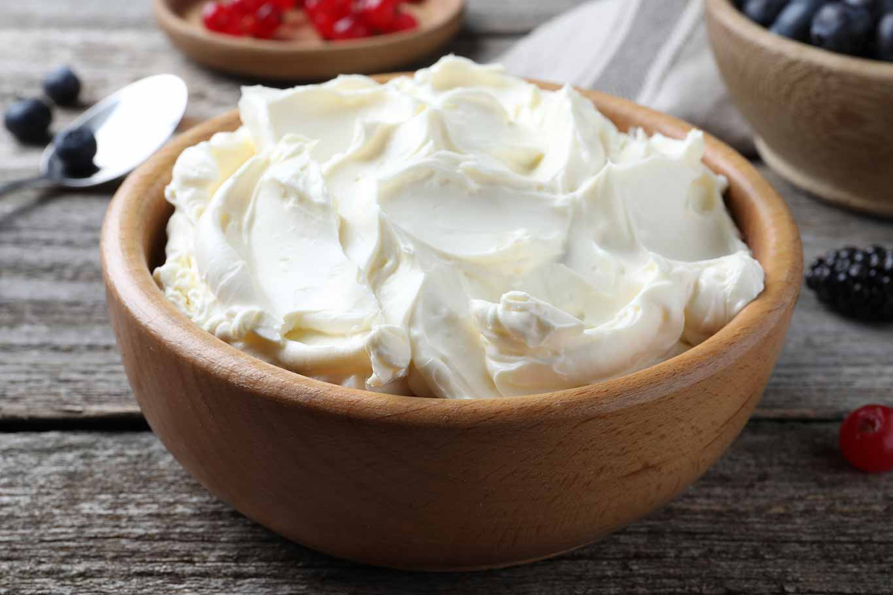
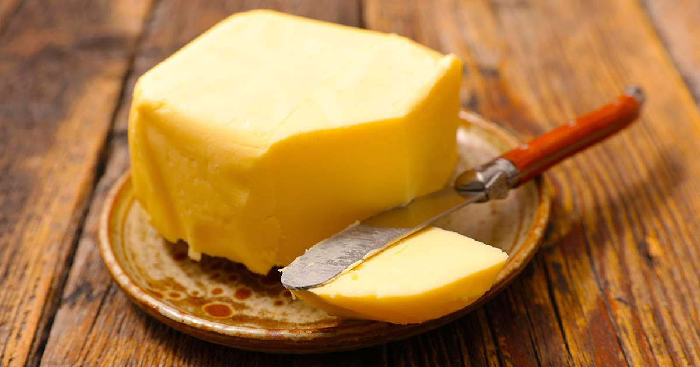

Artesanía & Tradición
El placer sublime del queso.
Tartas elaboradas a diario en La Font de la Figuera. Textura sedosa, interior fundente y una base de galleta inconfundible coronada con pasión.
Ver Colección de TartasArtesanía & Tradición
Tartas elaboradas a diario en La Font de la Figuera. Textura sedosa, interior fundente y una base de galleta inconfundible coronada con pasión.
Ver Colección de TartasPor qué nuestras tartas son diferentes.
Quesos crema nacionales seleccionados, huevos camperos de proximidad y chocolate belga.
No almacenamos. Tu tarta se prepara y hornea exclusivamente para ti el día que la necesitas.
Un centro fundente y cremoso que contrasta perfectamente con nuestra base crujiente tostada.
Explora nuestras 9 variedades y las ediciones especiales. Selecciona el tamaño ideal.
Desde la cesta de esta web se generará tu pedido directo a nuestro teléfono.
Te confirmaremos el encargo y la hora de recogida en nuestro obrador.
La Calidad es Nuestra Base
Seleccionamos cuidadosamente cada materia prima para garantizar un sabor auténtico y una textura inigualable. Sin conservantes ni aditivos innecesarios.




Recogidas en obrador. La Font de la Figuera, Valencia.